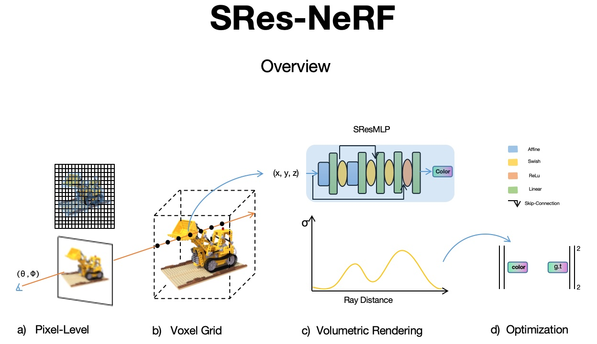

Research
Dai S, Cao Y, Duan P, et al. SRes-NeRF: improved neural radiance fields for realism and accuracy of specular reflections[C]//International Conference on Multimedia Modeling. Cham: Springer International Publishing, 2023: 306-317.
